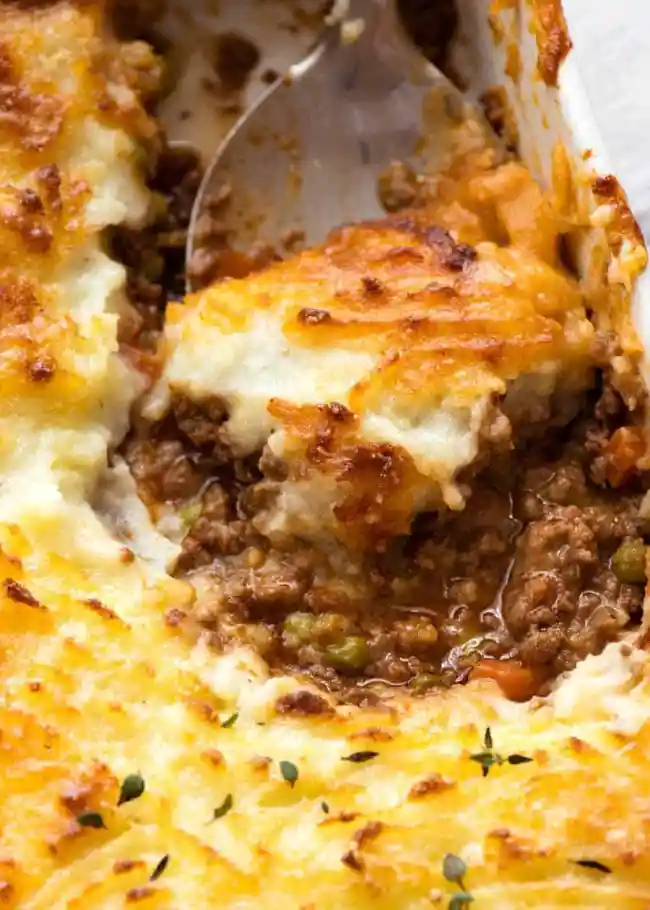

Shepherds's Pie

Wow! How delicious!
While Shepherd’s Pie is traditionally made with lamb, beef is just as tasty in this recipe. This is a timeless classic – make this once and you’ll make it over and over again!
Ingredients:
- 1 1/2 tbsp olive oil
- 2 garlic cloves
- 1 onion
- 1 carrot
- 1 rib celery
- 3/4 tsp each dried thyme and rosemary
- 750g (1.5 lb) ground lamb (mince) OR beef
- 1/4 cup (35g) flour
- 1/4 cup (55g) tomato paste
- 2 cups (500ml) beef stock / broth
- 1/2 cup (125ml) red wine
- 1 beef bouillon cube
- 1 tbsp Worcestershire sauce
- 2 dried bay leaves
- Salt and pepper
- 1 cup frozen peas
Mashed Potato:
- 1.2kg (2.2 lb) potatoes, peeled and cut into 2.5cm / 1" cubes
- 2/3 cup (165 ml) milk
- 2 tbsp (30g) butter
Crust:
- 2 – 3 tbsp grated parmesan
- 2 tbsp (30g) butter
- Fresh thyme leaves, optional garnish
Steps:
- Heat oil in a large skillet over medium high heat. Add onion and garlic, cook for 1 minute. Then add carrots, celery, thyme and rosemary. Cook for 3 minutes or until softened and sweet.
- Turn heat up to high. Add lamb and cook, breaking it up as you go, until browned.
- Add flour and mix in. Add tomato paste, broth, red wine, bouillon cube, Worcestershire sauce and bay leaves. Stir well.
- Bring to simmer, then turn down heat so it is simmering rapidly - I have it on medium. Cook for 30 minutes, stirring occasionally, until it reduces down to a thick gravy consistency.
- Adjust salt and pepper to taste. Transfer Filling to 1.5 litre / quart pie baking dish. Stir through peas. Cover, then refrigerate to cool for 1 - 2 hours or overnight
Assemble:
- Preheat oven to 180C/350F.
- Cook potatoes in boiling water for 15 minutes or until soft. Drain then return to pot on turned off stove. Allow to steam dry for 30 seconds or so.
- Add butter and mash until melted, then add milk, salt and pepper. Mash until it's soft and smooth (ie spreadable, but not sloppy), adjusting with a touch more milk if required.
- Spread mash onto pie, use a fork to draw squiggles over the surface. Sprinkle with parmesan, drizzle with butter.
- Bake for 30 - 40 minutes or until deep golden on top and bubbling on the edges. Stick a knife into the middle to ensure it is piping hot.
- Stand for 5 minutes before serving, garnished with fresh thyme leaves if desired.